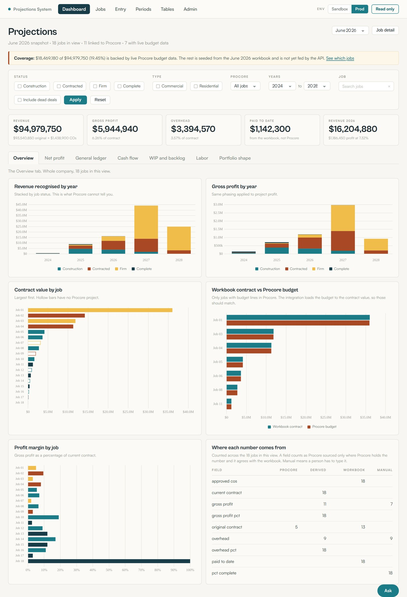
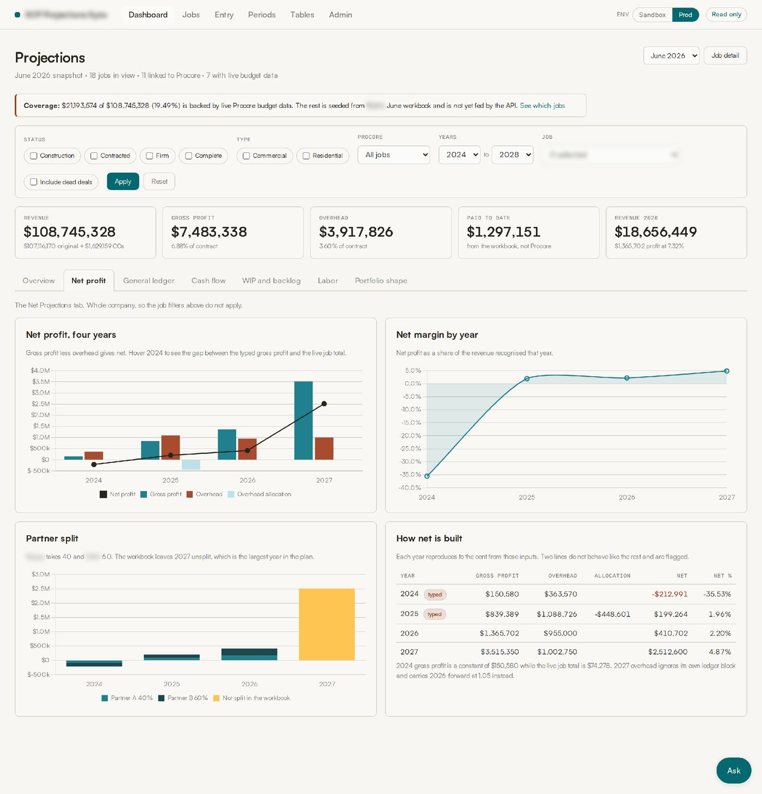
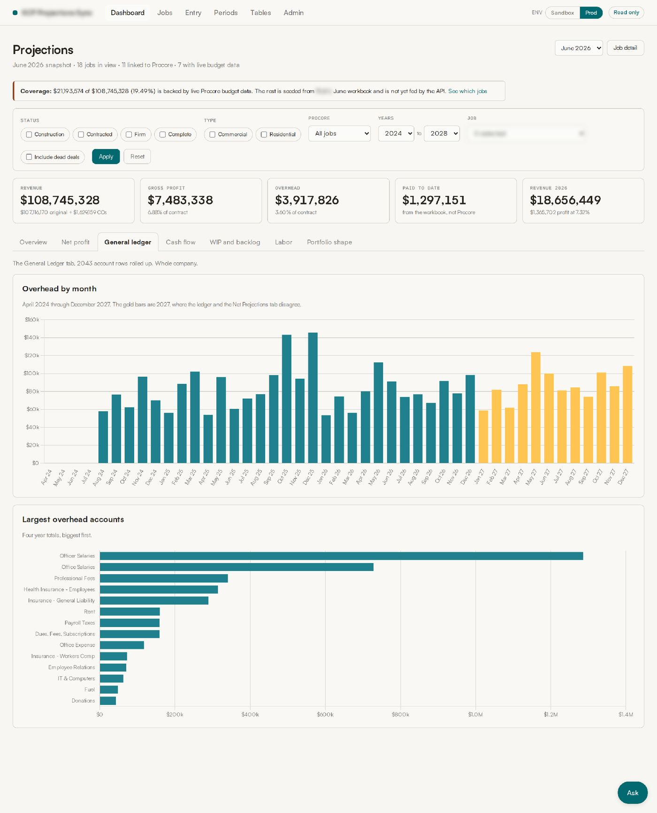
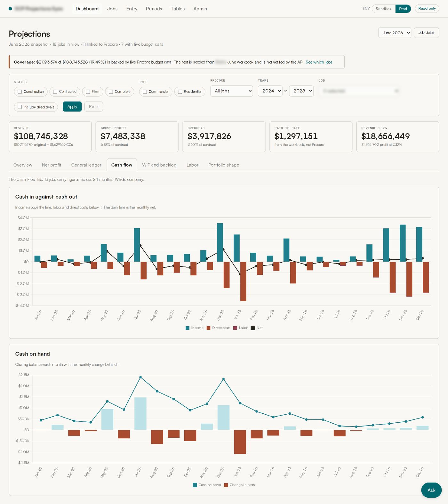
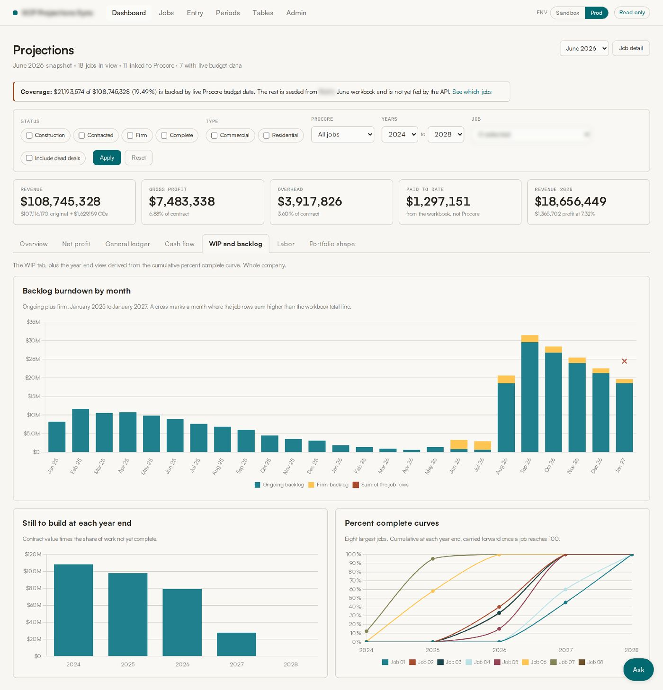
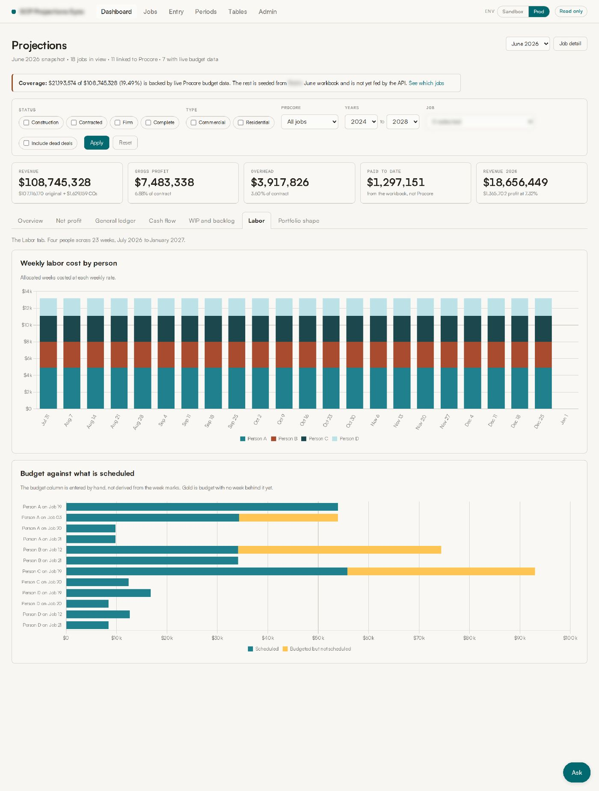
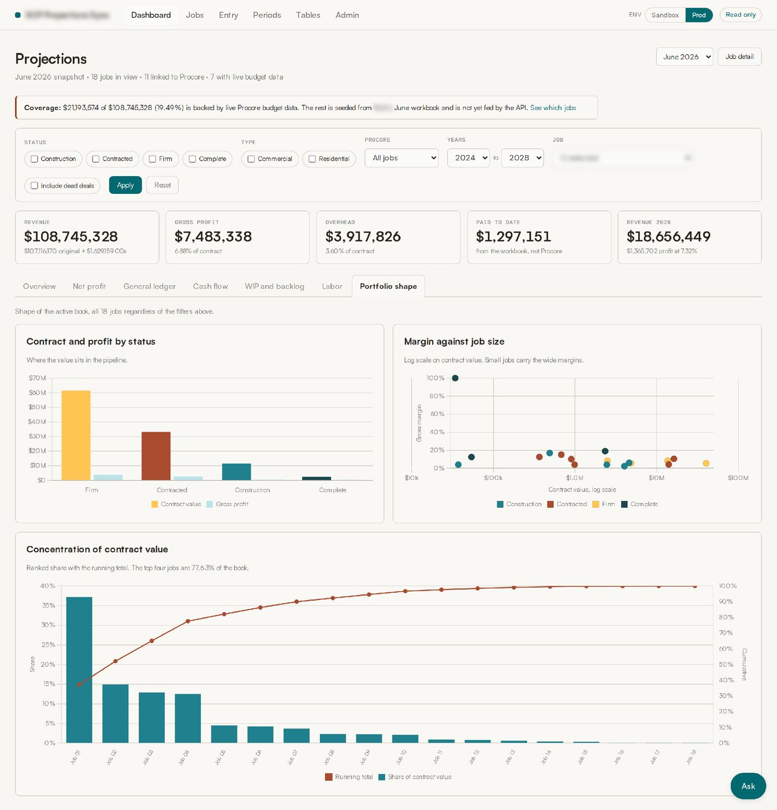
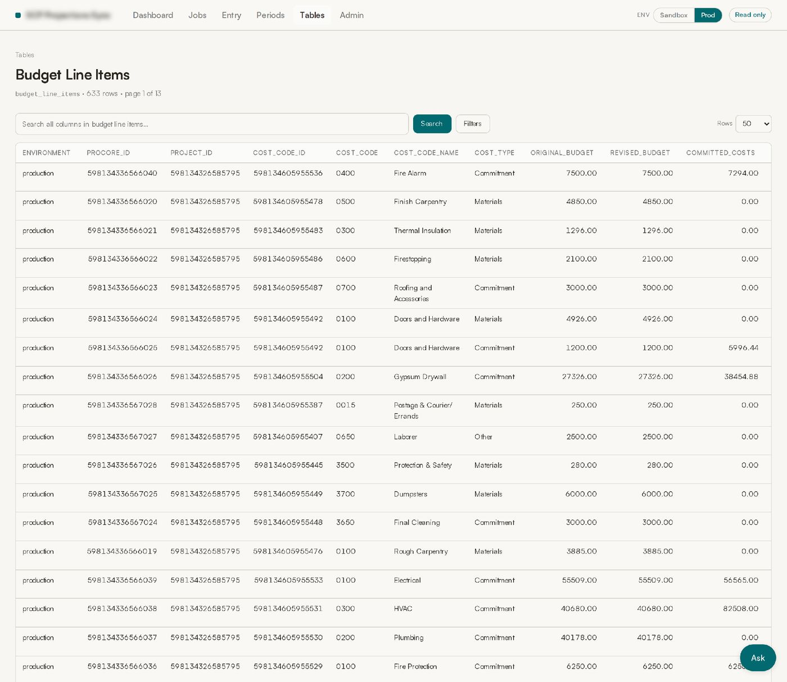
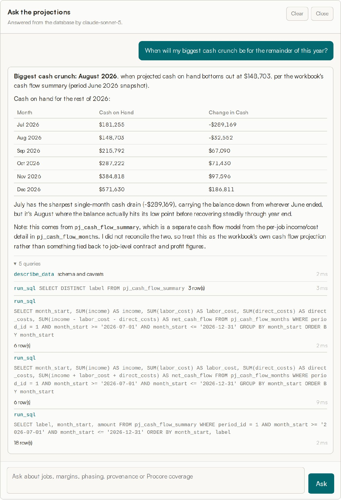

A profit projection platform built on MySQL and the Procore API that gives a commercial construction CEO back 8 to 10 hours every month.

A commercial construction general contractor forecast its entire business from one Excel workbook. Every active job, every dead deal, four years of general ledger overhead, monthly cash flow, weekly labor, and the partner profit split all lived in linked tabs that one person maintained by hand. It worked, in the sense that the numbers came out. It also took the better part of a business day each month to update, it could not be queried, two people could not open it at once, and it carried formula errors nobody had time to hunt down.
I replaced it with a web application. The workbook logic was reproduced formula by formula in JavaScript, verified against the original to the cent, and moved into a relational schema. Where the contractor already had data in Procore, the app now pulls it through the Procore REST API. Where Procore does not hold the data, the app gives them a spreadsheet-style grid to type it into, and records who typed it. The CEO opens a browser instead of a workbook, and the monthly cycle that used to take 8 to 10 hours now takes a fraction of that.
On top of that sits an AI layer built on Anthropic Claude, with read-only access to the same database and its own tools. It answers questions nobody built a screen for. Ask it when the biggest cash crunch lands for the rest of the year and it writes the queries, finds the trough, and shows every query it ran to get there.
The workbook was not a bad piece of work. It was a very good piece of work that had outgrown its container. Four specific things were breaking.
The workbook had one owner. Percent complete on every job, overhead by general ledger account by month, cash flow phasing, labor allocation, and the partner split were all keyed in or adjusted by that one person. If they were on vacation, the forecast froze. Nobody else could safely touch the file, because the cross-tab formulas were not obvious from the outside.
The contractor runs Procore for project management and budgeting. Contract values, change orders, budget line items, and direct costs already lived there. None of it flowed into the forecast. It was read off one screen and typed into another, which is both slow and a place for transcription errors to enter.
A question as simple as "which jobs are dragging our margin" required scrolling and eyeballing. There was no way to filter to firm backlog only, or to compare this month against last month, or to see how much of the book was concentrated in the top four jobs.
Reading the workbook formula by formula surfaced several genuine defects: a hardcoded gross profit figure that no longer matched the live job total, a partner split left blank for the largest year in the plan, a job omitted from a backlog subtotal, three jobs whose contract values disagreed between tabs, and a formula that squared a value it was meant to multiply. None of these were visible from the front of the workbook.
The platform is a Node.js and Express application with EJS server-rendered views, a MySQL database, and Chart.js for the visuals. It runs behind authentication and deploys automatically on push. There are five moving parts.
This is the core of the work and the part that had to be exactly right. Every formula in the workbook was traced and reimplemented as a JavaScript module: revenue recognition by year from the cumulative percent complete curve, gross profit phasing, overhead allocation, the general ledger rollup, net profit, net margin, backlog burndown, and the partner split.
The engine is held to a reconciliation harness that recomputes values from the database and compares them against the original workbook. It currently compares 270 values with zero mismatches, and a separate tab-level suite runs 21 assertions across the net projections, work in progress, labor, and cash flow tabs. The parser that reads the workbook is also fixture tested and reproduces both fixtures to within one part in a billion.
Seven views over the same filtered dataset. A persistent KPI strip across the top carries revenue, gross profit, overhead, paid to date, and current year revenue, and every figure below responds to the same filter bar: job status, commercial or residential, Procore link state, year range, individual job, and whether to include dead deals.
Overview: revenue and gross profit by year stacked by job status, contract value and margin by job, workbook contract against Procore budget, and the provenance table counting where every field actually comes from. The overview answers the two questions the CEO asks first: how much revenue does each year carry, and which jobs are carrying the margin. The provenance table is the one that matters most for trust. It counts, field by field across all 18 active jobs, how many values are Procore-sourced, derived, seeded from the workbook, or typed by a person. Nothing is described as Procore-sourced unless Procore actually holds the number and it agrees with the workbook.

Net profit: four-year net build, net margin by year, the partner split, and a reconciliation table showing how each year computes from its inputs with flagged lines called out. The net profit view reproduces the workbook's net projections tab and then does something the workbook could not: the "How net is built" table shows gross profit, overhead, allocation, net, and net percent for each year, side by side.

General ledger: overhead by month from April 2024 through December 2027, with the disputed 2027 months highlighted, and the largest overhead accounts across four years. The workbook preserves 52 overhead accounts across 45 months, keeping the detail an annual total would hide. The top chart shows overhead month by month, with clickable bars that drill into account, code, fiscal year, amount, and source row for full traceability. The same 2,043 rows are editable through a searchable, sortable grid with Excel paste support and a change preview, while reported actuals remain locked. Every edit is recorded in an audit trail with the field, old value, new value, and author.

Cash flow: income against labor and direct costs by month with the net line overlaid, and closing cash on hand with the monthly change behind it. This is the view that turns a phasing assumption into a visible cash trough.

Work in progress and backlog: monthly burndown with reconciliation crosses, contract value still to build at each year end, and cumulative percent complete curves for the eight largest jobs. The backlog burndown separates ongoing from firm backlog, and a cross marks any month where the individual job rows sum higher than the workbook total line. Twenty-four of 25 months tie exactly, and the one that doesn't is flagged rather than hidden.

Labor: weekly cost by person across 23 weeks, and budget against scheduled work by person and job with the unscheduled remainder in gold. That's exactly the gap a project manager needs to see before it becomes a surprise.

Portfolio shape: contract value and gross profit by pipeline status, gross margin plotted against job size on a log scale, and a concentration curve with running total. The margin-versus-job-size chart reveals a pattern that's difficult to see in a standard table: smaller jobs tend to produce wider margins, while larger jobs generally carry thinner margins. The concentration chart ranks jobs by contract value and shows how quickly total value accumulates. The top four jobs account for 77.63% of total contract value, making concentration risk immediately visible instead of requiring manual spreadsheet analysis.

Roughly a third of the model is not in Procore and never will be: percent complete judgments, overhead by general ledger account by month, cash flow phasing, weekly labor allocation, and the partner split. Those need a first-class entry experience or people will keep opening Excel.
So the app has spreadsheet-style grids for each: overhead, work in progress, labor, cash flow, and net projections. They accept paste from Excel, calculate row and column totals live, keep an edit history, and lock months that are already closed actuals so a past period cannot be silently rewritten. Every edit is written to an audit table with the field, the old value, the new value, and who made the change.
There is also a period model. The workbook was a monthly snapshot, so the app carries periods, a review screen for a new period, and a comparison view between any two periods so the month-over-month movement is a query rather than a diff of two files.
A read-only client against the Procore REST API mirrors projects, budget views, budget line items, cost codes, work breakdown structure segments, direct costs, companies, and identities into local tables, with every request and raw response logged for replay and debugging. The mirror currently holds 633 budget line items and 2,242 cost codes, and every mirror table is browsable in the app with search, column filters, and sorting, so a disputed number can be traced back to the exact API payload it came from.

The integration also surfaced two things worth knowing. Jobs do not join to Procore on job number: three jobs are numbered differently in Procore than in the workbook, and one workbook job number is reused. The join is on name instead, with a manual link editor for the exceptions.
Every screen described so far answers a question somebody already knew to ask. The problem with any dashboard is that it can only answer the questions its author anticipated. Real forecasting questions arrive in plain English, they arrive once, and they are rarely the ones on the menu.
So the last layer is an assistant built on Anthropic Claude, sitting directly on top of the same database. It is not a chatbot bolted onto the side, and it does not summarize a report that was already generated. It is a tool-using agent with read access to the model, and it composes its own SQL queries to answer whatever it's asked.
Claude is given three things at the start of every conversation: the live database schema, introspected at runtime so it can never drift out of date; a set of hand-written notes explaining what a schema dump can't express, such as the fact that jobs join to Procore on name rather than job number; and eleven tools, including list jobs, job detail, portfolio totals, year phasing, Procore coverage, provenance summary, reconciliation status, audit log, a schema describer, and a read-only SQL escape hatch for anything the other ten can't reach.
That last tool needed the most care. The guard is layered on purpose: comments are stripped and the statement must be a single SELECT or WITH, a list of write and administrative keywords is rejected outright, a row limit is forced onto any query that omits one, execution time is capped server-side, and the query runs inside a READ ONLY transaction so the database engine itself refuses a write even if every text check above it were somehow defeated. The text checks can in principle be tricked. The read-only transaction cannot, which is exactly why it's the last line.

The projections assistant answers questions that were never explicitly built into a report or dashboard. When asked when the biggest cash crunch would occur for the rest of 2026, it identified August 2026 as the low point at $148,703, showed the month-by-month cash position, and identified July's $289,169 decline as the key driver. It determined the forecast window from the data, validated the relevant cash-flow fields, and showed every SQL query, result count, and timing in an expandable trace. It also clearly stated that the answer came from the workbook's cash-flow summary and had not been reconciled to the underlying job-level detail, so the user can see exactly what was used and what remains unverified.
The first milestone was not a feature. It was reproducing the workbook exactly, bug for bug, with an automated check proving it. Until the app could produce the same numbers the CEO already trusted, no new capability was worth building. That constraint is what makes the 270-value reconciliation harness the most important file in the repository.
Where two sources disagree, the app shows both and marks the conflict: workbook contract value against Procore budget, job row sums against backlog totals, ledger detail against the summary line, typed gross profit against the live job total. Each one became a specific question for the people who own that data, rather than a decision made unilaterally in code.
Every grid in the application is searchable, filterable, and sortable, including the raw API mirror tables. The whole point of leaving the spreadsheet was to stop scrolling and start asking questions. The AI layer is the same idea taken to its end: if the data is clean, documented, and provenance-labelled, a person should be able to ask it anything in plain English without waiting on a developer to build a screen first.
The time saving is the headline, but the durable win is different. The forecast is no longer one person and one file. It is a schema, a tested engine, a set of provenance labels, and an audit trail. Anyone with access can ask it a question, and every number it returns can be traced to where it came from.
Cameron Patalano is an AI & Automation Advisor and former Business Intelligence Analyst who builds custom AI tools, automation infrastructure, and full-stack applications for small and mid-size businesses. Recent work includes this profit projection platform, which saves a commercial construction CEO 8 to 10 hours each month on forecasting, and an AI-driven video-to-content pipeline that turns recorded interviews into blog posts, social posts, and podcast clips.